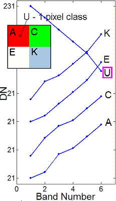
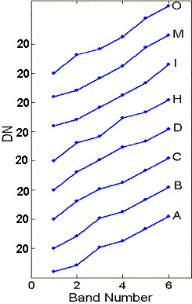
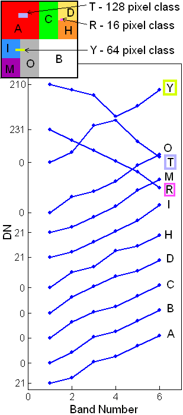

Data set descriptions
All four data sets are 128×128 pixel images where each pixel has a 6-dimensional vector associated with it. The different spectral classes are distributed
over subareas of the 128×128 image. Below, we describe the spectral
signatures and populations for our 5-class,
8-class and 11-class data sets.
Within each subdirectory there are the following 5 files:
| Nclass[-noise params].viff | Khoros format image file |
| Nclass[-noise params].viff.hdr | ENVI header for image file |
| Nclass_map.img | ENVI format class map image |
| Nclass_map.img.hdr | ENVI header for class map image |
| Nclass_map.incl | Pixel positions of classes in class map image |
5-class data set
This data set consists of 5 spectral classes distributed
over the subareas of the 128×128 spectral image. The classes B, C
and D occupy 4096 pixels each, class A has 4095 pixels and class U is a
rare class which has only one pixel. The rare class U has a distinctly
different signature than the other classes. This is a noiseless data set:
all the vectors belonging to a particular class are exactly the same. The
signatures of the various classes and their distribution over the subareas
of the image are shown below:
| Classes and the no. of pixels they occupy |
The 5-class Image and signatures of the classes |
| Class |
No. of pixels |
| A |
4095 |
| C |
4096 |
| E |
4096 |
| K |
4096 |
| U |
1 |
|
 |
8-class data set
This data set consists of 8 spectral classes distributed
over the subareas of the 128×128 spectral image. This is a noisy
data set: vectors belonging to a particular class differ slightly from
each other. In this case, additive Gaussian noise (mean=0, var=5.0) has been applied.
The mean signatures of the various classes and their distribution over
the subareas of the image are shown in the following figure.
| Classes and the no. of pixels they occupy |
The 8-class Image |
Mean signatures of the 8-class data set |
| Class |
No. of pixels |
| A |
4096 |
| B |
4096 |
| C |
2048 |
| D |
1024 |
| H |
1024 |
| I |
1024 |
| M |
1024 |
| O |
2048 |
|
|
 |
11-class data set
This data set consists of 11 spectral classes distributed
over the subareas of the 128×128 spectral image. This is a noisy
data set: vectors belonging to a particular class differ slightly from
each other. On the average, about 10% of Gaussian noise has been added.
The mean signatures of the various classes and their distribution over
the subareas of the image are shown in the following figure.
| Classes and the no. of pixels they occupy |
Mean signatures of the 11-class data set |
| Class |
No. of pixels |
| A |
3968 |
| B |
4096 |
| C |
2048 |
| D |
1012 |
| H |
1020 |
| I |
992 |
| M |
1024 |
| O |
2016 |
| R |
16 |
| T |
128 |
| Y |
64 |
|
 |
Copyright 2010-2011, Erzsébet Merényi (erzsebet@rice.edu), Rice University.